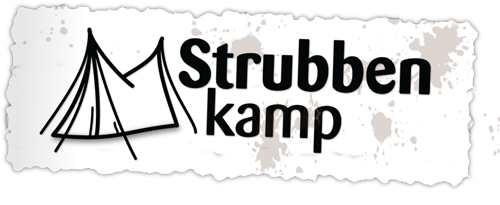
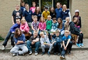
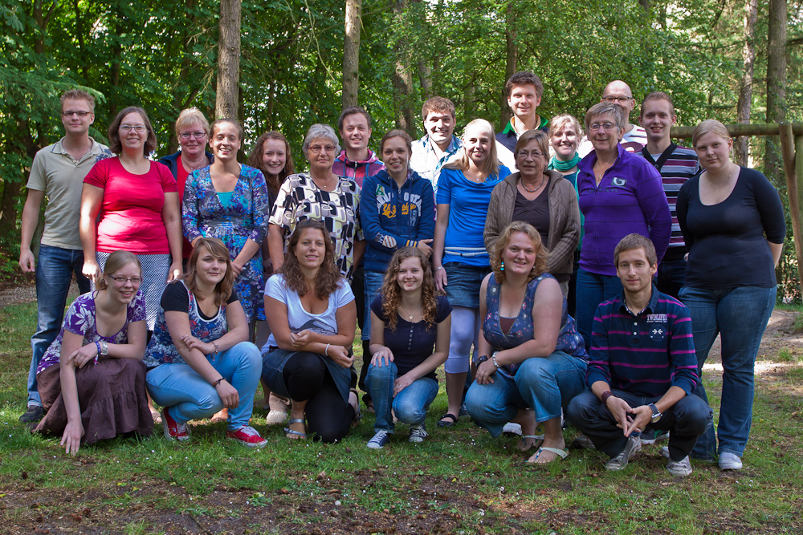
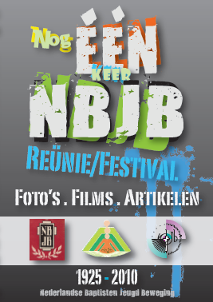

Nederlands Baptisten Jeugd Beweging
De Strubben stopt!
Met pijn in hart en ziel heeft het bestuur van De Strubben besloten om te stoppen. Vanwege diverse redenen zoals teruglopende boekingen, andere wensen van huurders, de strenge eisen van de overheid en hoge kosten voor noodzakelijk onderhoud is het niet meer rendabel om de gebouwen te exploiteren en te onderhouden.
09 november 2015 Lees verder ...
Strubbenkamp stopt!
Wellicht heb je wel eens meegekregen dat het Strubbenkamp kampwerk steeds op het nippertje werd gered. Het missen of moeizaam bereiken van het juiste aantal deelnemers, financien, leiding en goed draaiende kampcommissie heeft uiteindelijk gemaakt dat we nu toch definitief besloten dat er volgend jaar geen strubbenkamp gaat plaatsvinden.
01 Januari 2013 Lees verder ...
Strubbenkamp.nl
Ga naar de website www.Strubbenkamp.nl voor meer informatie en opgave voor het Strubbenkamp, opgeven voor het Moeder-Kindkamp kan via www.Baptisten.nl
20 November 2011 Lees verder ...
Cool, Cool, Supercool
'Een onvergetelijke vakantie', dat hebben de kinderen en jongeren deze maand mogen beleven tijdens de kampweek op de Strubben. Een geweldige groep leiding heeft een gave week neer gezet waarin de kinderen hebben mogen genieten van elkaar, van de natuur en van God.
Rooster.Management
11 Augustus 2011 Lees verder ...
Instructieweekend een succes.
Afgelopen weekend heeft de leiding van het Strubbenkamp haar instructie gekregen om er deze zomer een goede vakantieweek van te maken. Op de Strubben werd met elkaar kennisgemaakt, de voorbereidingen getroffen, de eerste programma ideeen bedacht en alvast de planning opgezet.
15 Mei 2011 Lees verder ...
Strubbenkamp nu mét familiekorting!
In de week van 23 t/m 30 juli 2011 kun je op de Strubben te Schoonloo (Drenthe) een gave kampweek beleven. Kinderen en jongeren zijn welkom om een heerlijke vakantieweek met elkaar, de leiding én God te ervaren!
Nieuw: gezinnen die met drie of meer kinderen naar Strubbenkamp komen, ontvangen een familiekorting! Elk derde gezinslid betaalt de helft van de kampprijs!
23 April 2011 Lees verder ...
Uitbreiding Kampcommissie
Sinds begin van dit jaar is de kampcommissie uitgebreid met twee nieuwe leden. De kampcommissie zorgt er ook dit jaar weer voor dat er een gaaf Strubbenkamp georganiseerd wordt. De eerste vergaderingen zijn geweest en wij hebben er nu al weer veel zin in.
06 Februari 2011 Lees verder ...
Strubbenkamp 2011
Deze zomer organiseert het taakveld Jeugdwerk van de Unie van Baptistengemeenten weer de Strubbenkampen. Dit vindt plaats op de Strubben in Schoonloo, dit is een prachtig terrein in de bossen van Drenthe.
Strubbenkamp: Zaterdag 23 t/m zaterdag 30 juli 2011
Moeder-kindkamp: Zondag 31 juli t/m zaterdag 6 augustus 2011
04 December 2010 Lees verder ...
Nog één keer NBJB: Verzending DVD
De DVD is klaar! Hij wordt deze week verzonden. Als de postbezorgers niet aan het staken zijn heb je de DVD, zoals beloofd, ruim voor de kerst in huis.
04 December 2010 Lees verder ...
Terugblik Strubbenkampen 2010
Van 17 t/m 24 juli stond de Strubben in het teken van Strubbenkamp en op 24 juli begon de eerste editie van het Moeder-Kindkamp. Beiden waren een groot succes.
23 Augustus 2010 Lees verder ...
Nog één keer NBJB: Video If you're happy!
Tijdens het afscheidsweekend/reünieweekend voor de NBJB gaf André Bijleveld (bekend van Gospel Boulevard/Benediction e.d.) een avondje ouderwets gospels en spirituals zingen vanuit de NBJB bundel.
Bekijk de video
31 Mei 2010 Lees verder ...